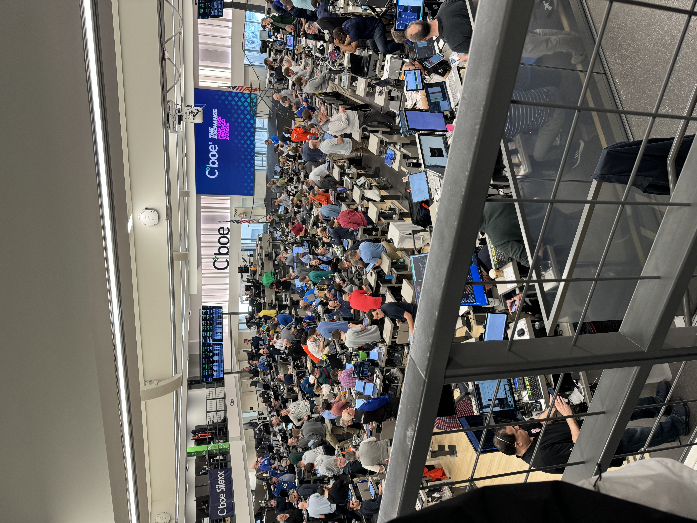
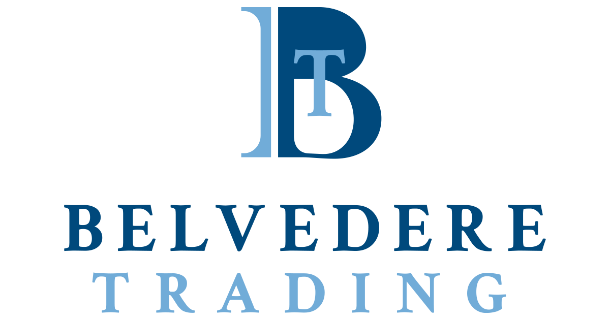

Quantitative Trading Extern
Chicago, IL
March 2024
During my externship at Belvedere Trading, I was immersed in the fast-paced world of options trading. This experience provided a rare look into how financial strategies, real-time market data, and technical tools come together in modern trading environments.
I shadowed quantitative traders, researchers, and product managers to explore trading operations and learn how profitability is achieved through financial instruments like calls and puts. I attended detailed lectures on trading theory and visited the Chicago Board of Trade to observe live market activity.
I also gained hands-on insight into how Python is used in developing trading models and streamlining reporting systems. Exposure to product management gave me a broader understanding of cross-functional collaboration and the behind-the-scenes work that supports fast, informed trading decisions.
This experience strengthened my curiosity about algorithmic trading and increased my appreciation for the role data plays in high-stakes decision-making. I left inspired to pursue roles that combine quantitative thinking, technical problem-solving, and business insight.

